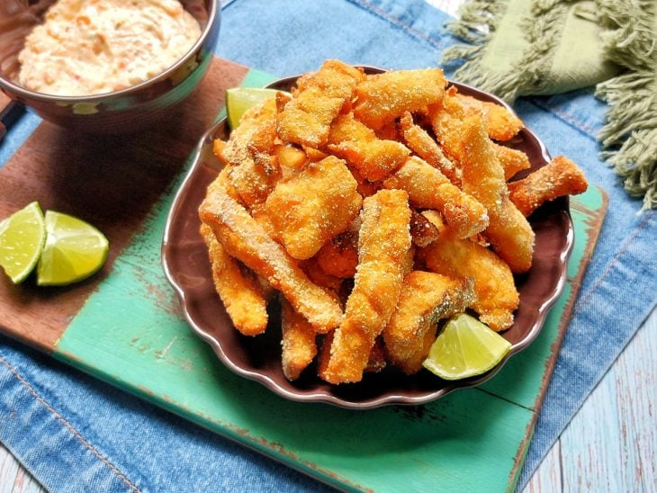
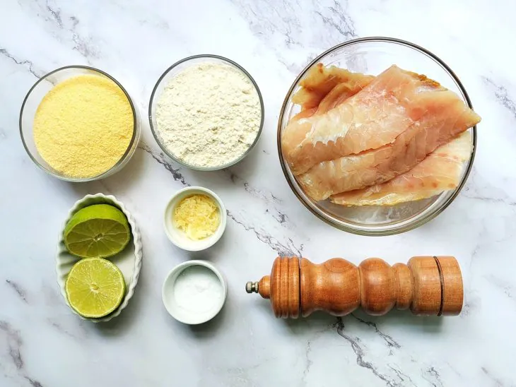
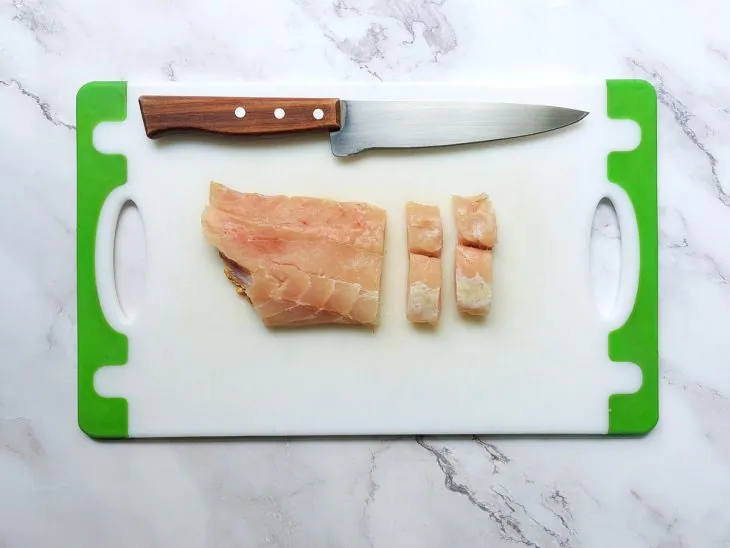
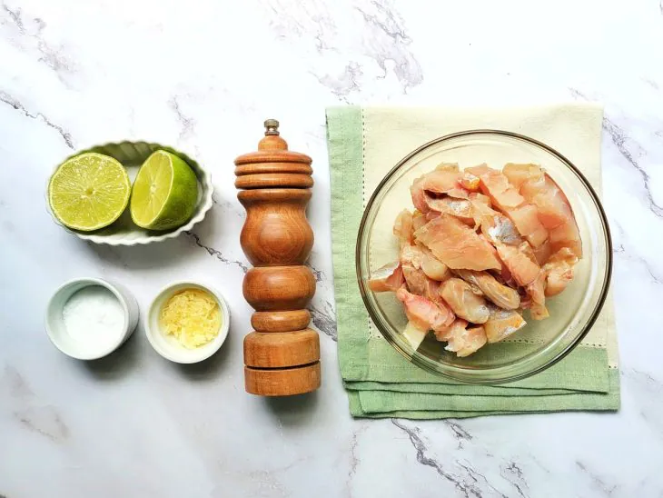
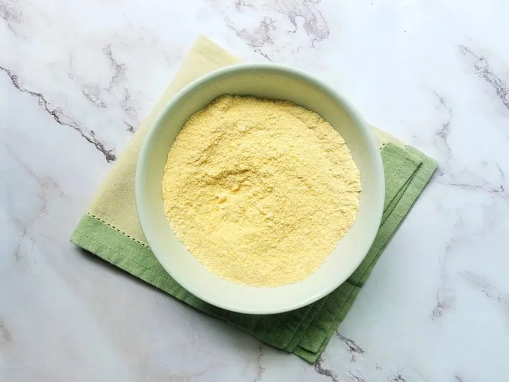
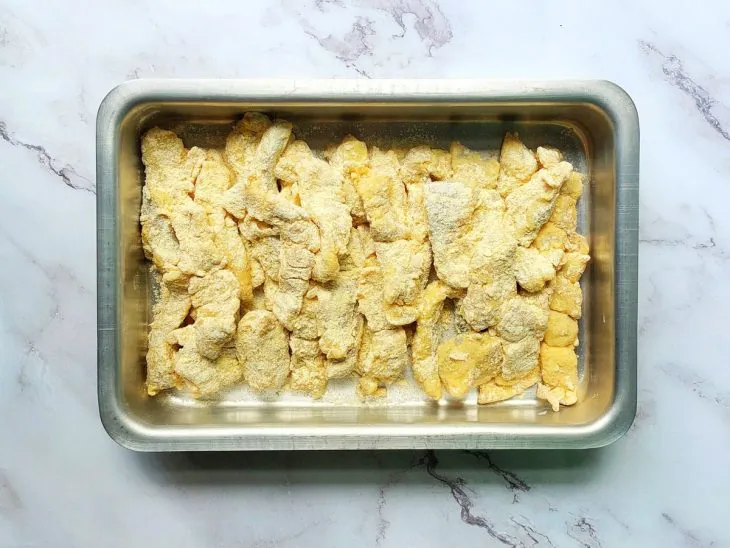
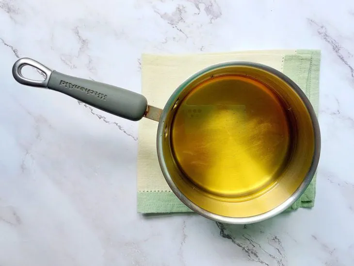
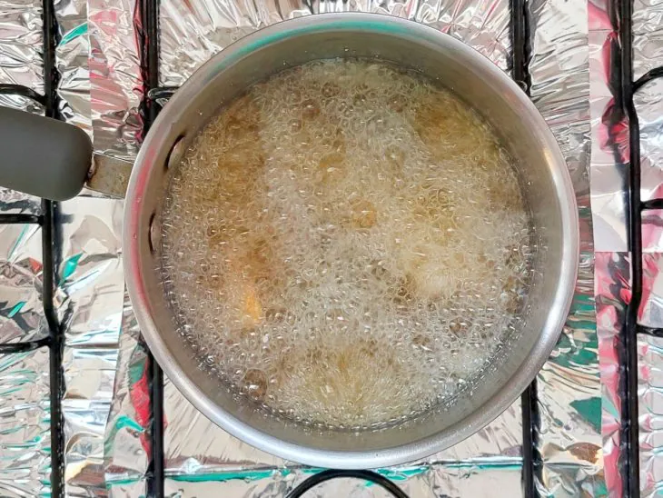
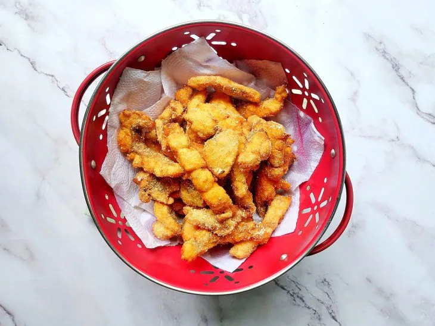
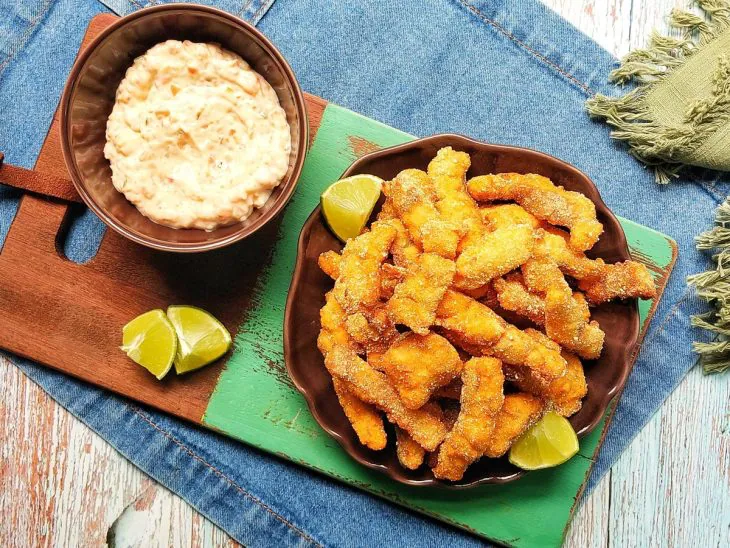

57 receitas com frango que são deliciosas e fáceis de preparar
42 receitas com peito de frango práticas e irresistíveis
32 receitas de filé de frango para variar o cardápio do dia a dia
10 receitas de fricassê de frango cremoso que fazem sucesso na mesa

Sobrecoxa na airfryer
Ingredientes
Modo de preparo

Reúna todos os ingredientes;

Em uma tábua, corte os peixes em iscas;

Leve o peixe fatiado a um recipiente e tempere com sal, pimenta-do-reino, suco de limão e alho;

Em outro recipiente, misture a farinha de trigo com o fubá;

Empane os peixes nessa mistura de secos e reserve;

Em uma panela, coloque óleo suficiente para fritar os peixes;

Assim que estiver bem quente, frite as iscas por imersão;

Depois de fritas, acomode-as em um papel toalha para escorrer o excesso de óleo;

Está pronto! Bom apetite.
 57 receitas com frango que são deliciosas e fáceis de preparar
57 receitas com frango que são deliciosas e fáceis de preparar
 42 receitas com peito de frango práticas e irresistíveis
42 receitas com peito de frango práticas e irresistíveis
 32 receitas de filé de frango para variar o cardápio do dia a dia
32 receitas de filé de frango para variar o cardápio do dia a dia
 10 receitas de fricassê de frango cremoso que fazem sucesso na mesa
10 receitas de fricassê de frango cremoso que fazem sucesso na mesa